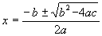

Not much happening at work. Fixed a few errors, added some value, played lots of Solitaire. Oh, and 'Concentration', a picture-matching game that a colleague has written in Visual Basic. That kind of thing is going on quite a bit at the moment; writing fun software for want of something to do. People are picking up some useful skills that way, perhaps I should give it a try.
A couple of guys are having a screen-saver writing competition. It's all very secretive, but just occasionally I get brief insights when my mathematical knowledge (what remains of it) is called upon for help. I receive strange emails asking me about light diffraction, vectors, cross products, and the structure of the Carbon 60 molecule. Even less often, I'm actually able to be of assistance, such as today when I was asked the formula for roots of a quadratic equation. Mmmm. It actually felt great to still know that; I think it was my most significant 'achievement' of the week.
I often spend days on end away from my PC. It's hell. It has the side-effect that I don't get to update this journal as often as I like. So, rather than have you making fruitless repeat visits to these pages, I've set up a notify list. Just click the lovely pink button over on the left. Alternatively, for the hyper-paranoid, simply email me and I'll do the rest.